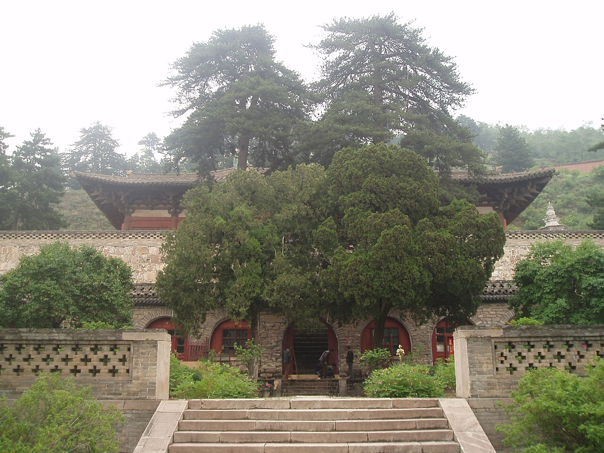
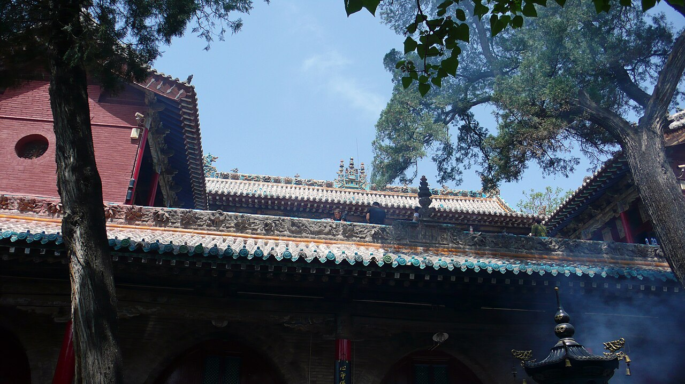
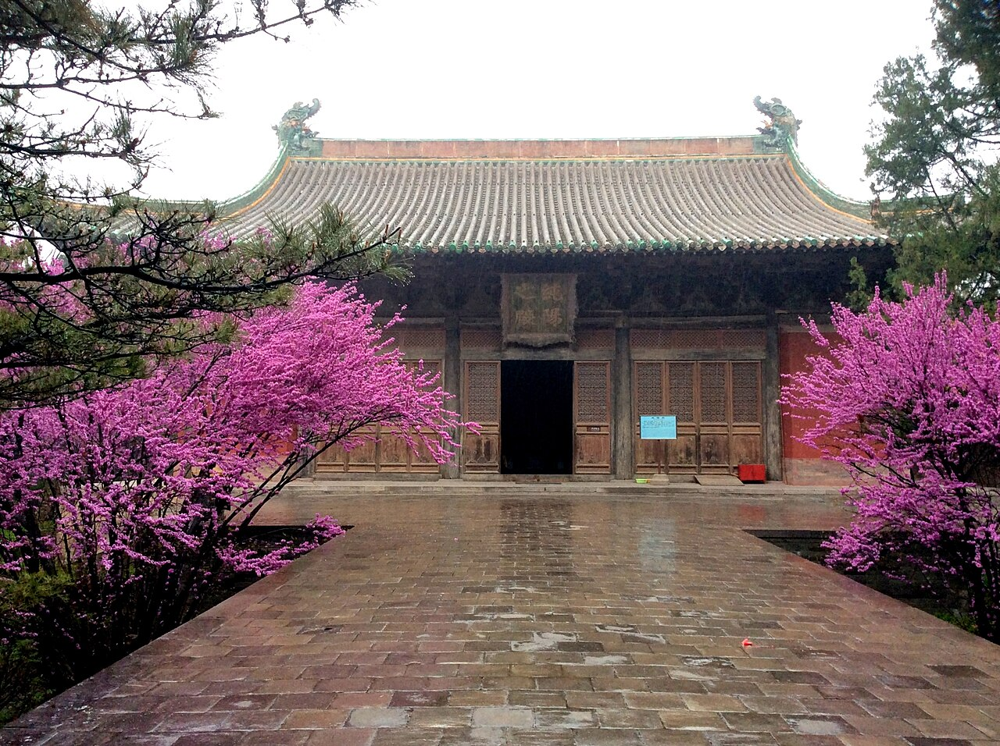
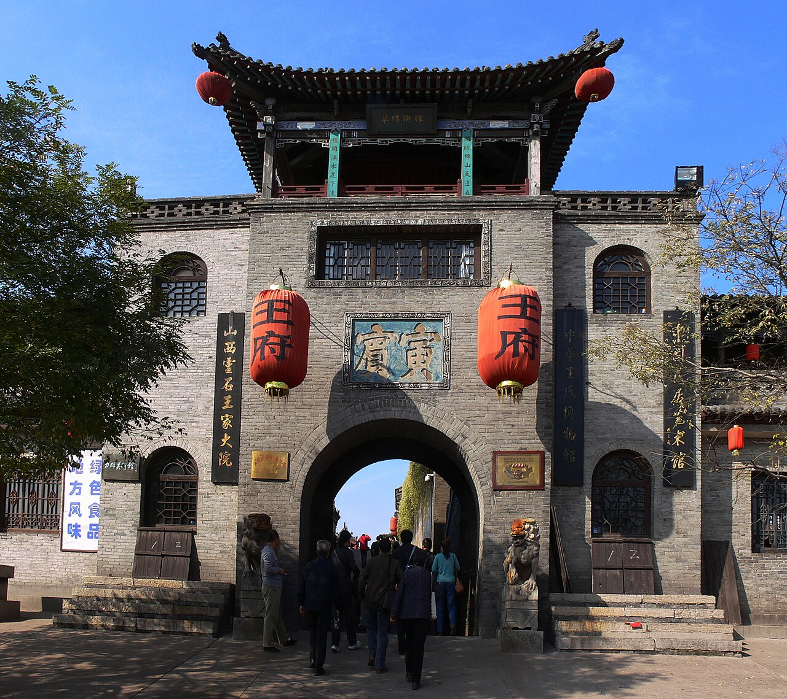
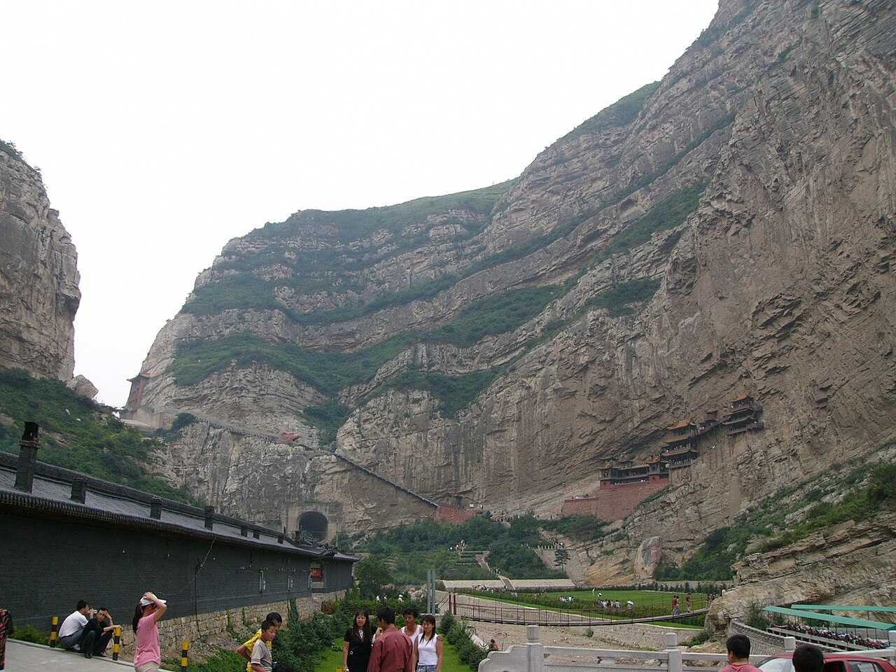

01大同
云冈石窟
适合拍巨佛、洞窟轮廓、石壁光影。人物可以放小一点，让石窟的尺度成为主角。
山西古建不只“多”，还特别适合拍照：石窟有气势，木塔有高度，古城有街巷，大院有纵深，寺观有壁画和斗拱。想拍得好看，先选对画面类型。
这里的“最出片”按镜头表现力来排：建筑辨识度、空间纵深、细节密度、人像适配度和社交平台首图冲击力。
适合拍巨佛、洞窟轮廓、石壁光影。人物可以放小一点，让石窟的尺度成为主角。
一座塔就能撑住整张照片。建议低机位竖构图，保留塔基和塔檐层层上升的节奏。
古建、古木、泉水和园林在一起，照片更有呼吸感。适合拍廊柱、殿前层次和安静人像。
城墙、街巷、票号、民居都能拍。日落前上城墙，夜色里拍街灯，组图很完整。
赢在位置奇险。远景交代悬崖关系，近景拍栈道和栏杆，不必每张都把人放大。

06佛光寺看唐代木构气质，适合拍殿前尺度、斗拱和低饱和古建色。
07小西天殿内彩塑密度很高，视觉冲击强。注意按现场规定拍摄。
08永乐宫壁画和宫观空间很适合做文化向组图，人物穿搭要克制。 09乔家大院主打晋商大院纵深、门洞框景和红灯笼氛围。
09乔家大院主打晋商大院纵深、门洞框景和红灯笼氛围。
10王家大院院落体量更大，石雕、墙体和坡地空间特别适合广角大景。
+华严寺 / 善化寺在大同市区顺路拍辽金古建，适合和云冈、悬空寺一起安排。页面新配图来自 Wikimedia Commons，包含 CC0、Public domain、CC BY、CC BY-SA 授权图片。